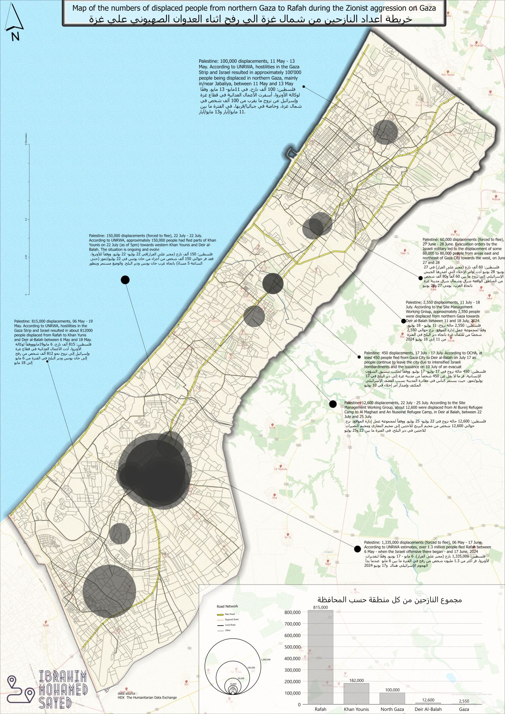
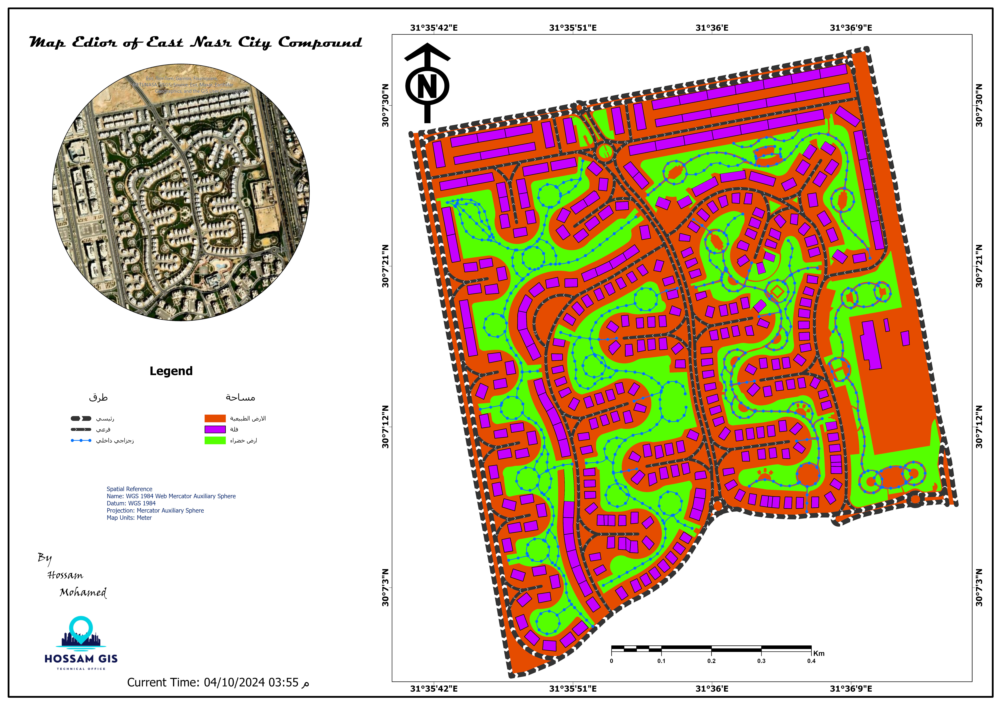
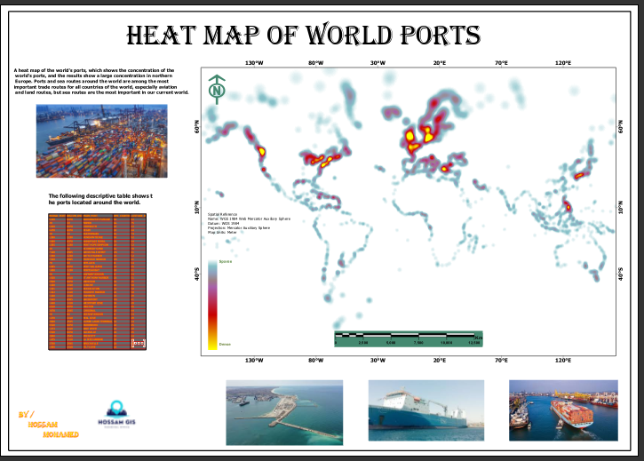
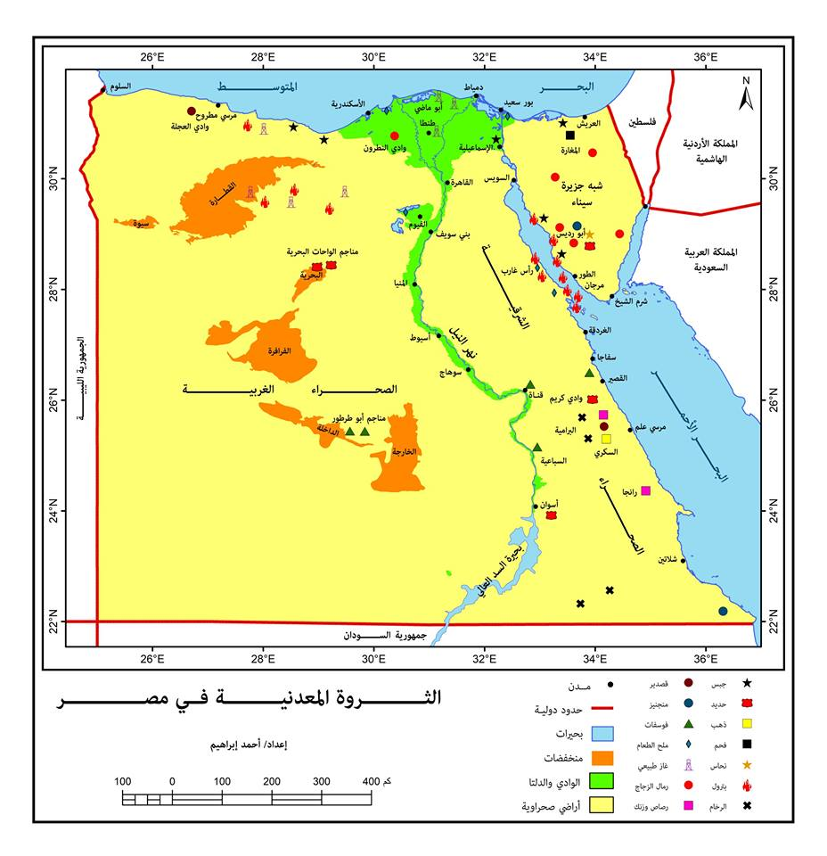
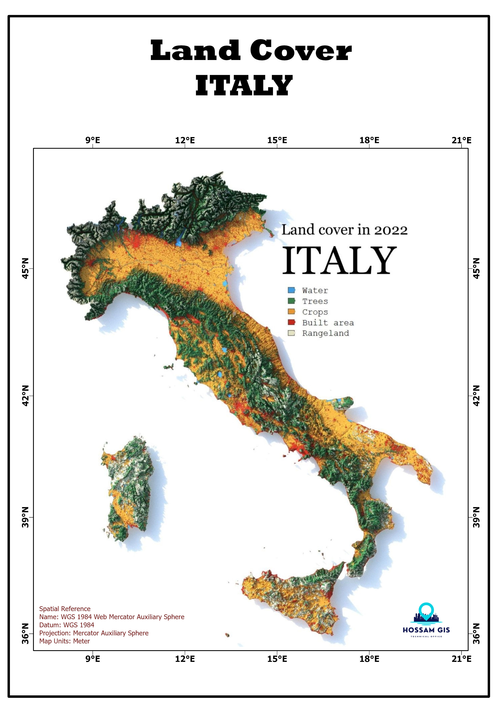
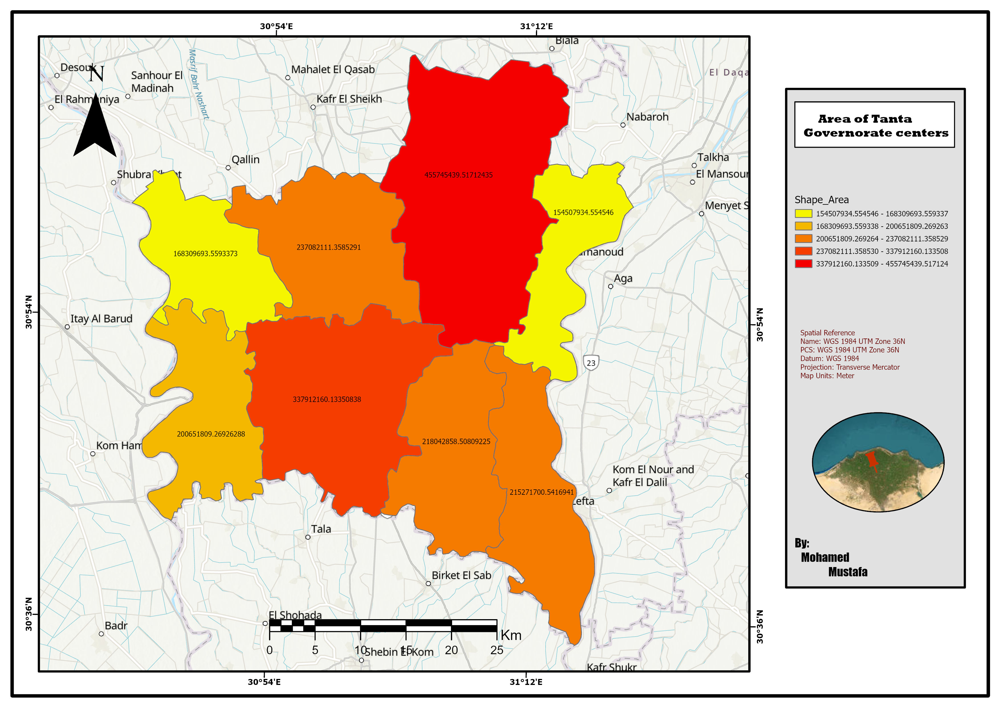
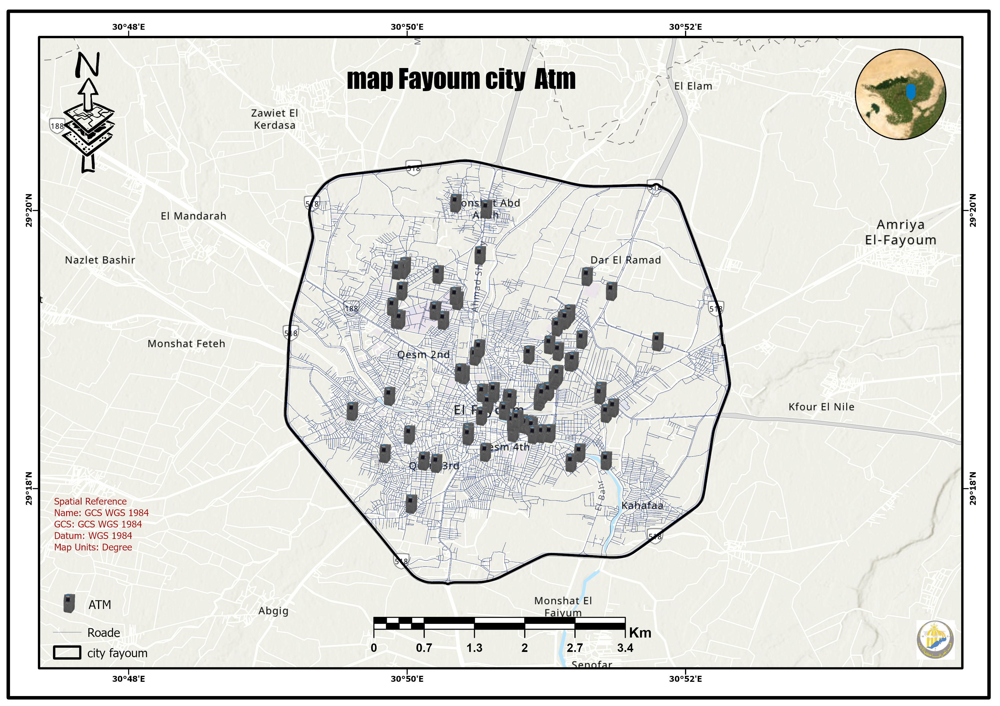
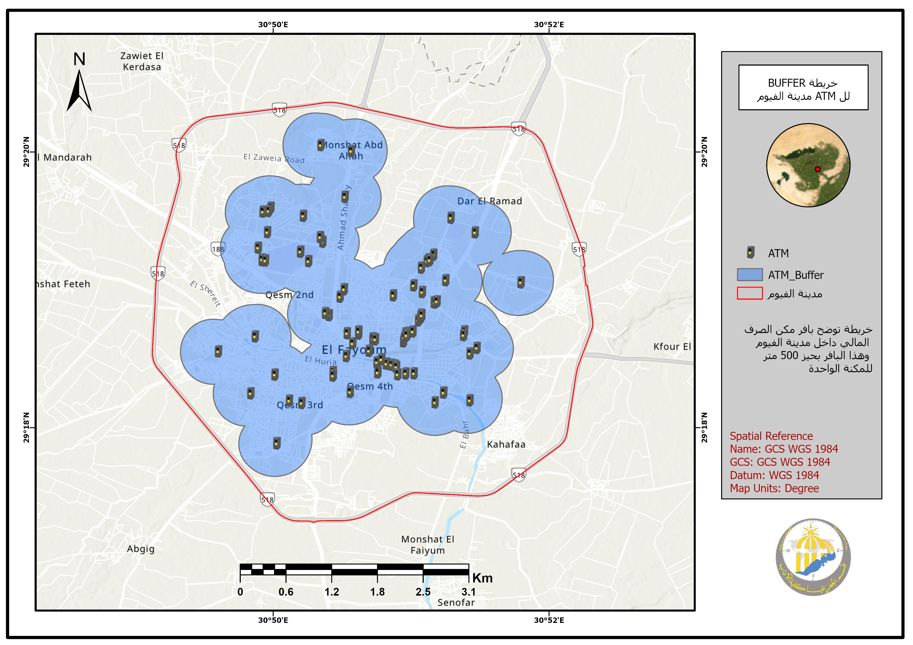

➤The owner of what Siam is exposed to are projects
*Name: Hossam Mohamed Ahmed
*Employer: Construction Company
*Location: Fayoum
...........................................
➤Programs that were designed to be worked on
➤ We present a portfolio of our work implemented through advanced GIS tools and technologies.



Maps showing Gaza City after the invasion
.........................................................................................................




Maps showing some areas within New Cairo
.........................................................................................................


Some maps were used with network analysis to determine the most suitable routes and best methods.
.........................................................................................................



Some world maps to illustrate some landmarks.
.........................................................................................................

World topography map.
.........................................................................................................
➤ A presentation showing how to fill in some maps








.........................................................................................................
➤ ATM project in Fayoum Governorate



.jpg)
1.jpg)



.........................................................................................................
➤ Makani project in Abha region, Saudi Arabia